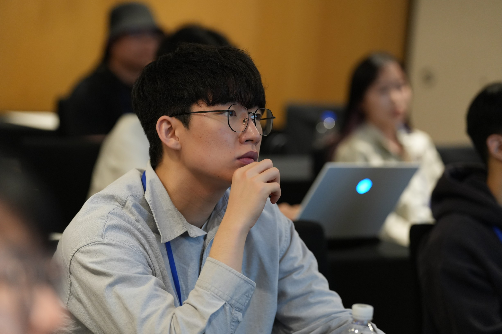

01 · Profile
About소개
Background and research interests연구 관심 분야와 배경
I am an Integrated M.S./Ph.D. student at UNIST Computer Science and Engineering, in the Data Mining Lab led by Prof. Junghoon Kim. My research explores Graph Mining, Cohesive Subgraph Discovery, and Community Search, with recent work extending these questions to bipartite networks and hypergraphs. I completed my Bachelor's degree at UNIST (Computer Science and Engineering).
저는 UNIST 컴퓨터공학과 석박사통합과정 학생으로, 김정훈 교수님의 Data Mining Lab에 소속되어 있습니다. 그래프 마이닝, 응집 부분그래프 탐색, 커뮤니티 탐색을 연구하고 있으며, 최근에는 이분 그래프와 하이퍼그래프로 문제를 확장하고 있습니다. 학사 역시 UNIST 컴퓨터공학과에서 마쳤습니다.

02 · Research
Publications논문
Selected international and domestic work국제 및 국내 연구 실적
International
Domestic
NHSCAN: Node-based Hypergraph SCAN
Weighted Structural Similarity for Density-Based Graph Clustering
Community Detection in Large-scale Attributed Networks via Joint Structural and Attribute Modularity Maximization
Complex Network Stability: Exploring Comprehensive Anchored Edge s-Core
Community Detection Based on Ollivier-Ricci Curvature and Modularity
03 · Recognition
Awards수상 및 장학
Awards, grants, and scholarships수상, 지원금 및 장학
2026
ACM SIGMOD 2026 Travel Grant Awardee
2025
ACM CIKM 2025 Student Travel Grant
2025 Fall ~ Present
National Scholarship for Graduate Studies, Ministry of Education, Republic of Korea
2024
Korea Database Conference 2024 Best Paper Award (Bronze)
04 · Teaching
Teaching강의 조교
Teaching assistantship and industry education강의 조교 및 산업 교육 경험
2026 Spring
Teaching Assistant — Database Systems [CSE321], UNIST
2026 Spring
Teaching Assistant — AI Toolkit for Industry [NOVA503], UNIST
2025 Fall
Teaching Assistant — Data Structures [CSE221], UNIST
2024 Jun. · 2025 Jul.
Data Mining & Machine Learning — Lecturer / TA, LG Electronics DX & Living DX Intensive Course
2025 Feb.
PBL — Personalized Washing Machine Course Recommendation — TA, LG Electronics DX & Living DX Intensive Course
2025 Aug. ~ Sep.
PBL — Factory Power Consumption Forecasting — TA, LG Electronics DX & Living DX Intensive Course
2026 Jan.
Prompt Engineering with Open-source LLMs — Lecturer / TA, LG Electronics DX & Living DX Intensive Course
2026 Feb.
BOM Price-change Automation with LLMs — TA, LG Electronics DX & Living DX Intensive Course
2026 May
Data Mining & Machine Learning — Lecturer / TA — Nuclear Power & Energy Specialized AI Professional Training Program
05 · IP
Patents특허
Filed inventions related to graph and network analysis그래프 및 네트워크 분석 관련 출원
10-2026-0096258 · 2026.05.27
Method and Apparatus for Discovering Cohesive Subhypergraphs Using Decay-based Participation Strength in Hypergraphs
하이퍼그래프에서 감쇠 기반 참여 강도를 이용한 응집적 부분 하이퍼그래프 탐색 장치 및 방법
10-2026-0004498 · 2026.01.09
Network Clustering System and Method Based on Weighted Structural Similarity
가중 구조 유사도에 기반한 네트워크 클러스터링 시스템 및 방법
10-2025-0205480 · 2025.12.19
Community Detection Method for Large-scale Attributed Networks via Joint Structural and Attribute Modularity Maximization
구조 및 속성 결합 모듈러리티 최대화를 통한 대규모 속성 네트워크의 커뮤니티 탐지 방법
10-2025-0166255 · 2025.12.01
Method and Apparatus for Discovering Cohesive Subgraphs in Bipartite Networks
이분 네트워크에서 응집력 있는 부분 그래프를 탐색하는 방법 및 장치
10-2025-0034070 · 2025.03.17
Method and Apparatus for Community Detection Based on Ollivier-Ricci Curvature and Modularity
올리비아-리치 곡률과 모듈러리티 기반의 커뮤니티 탐지를 위한 방법 및 장치
06 · Academic
Education학력
Academic background at UNISTUNIST 학력
UNIST (Ulsan National Institute of Science and Technology)
2025 Sep. ~ Now
Integrated M.S./Ph.D. Program, Computer Science and Engineering · Advisor: Prof. Junghoon Kim
컴퓨터공학과 석박사통합과정 · 지도교수: 김정훈
UNIST (Ulsan National Institute of Science and Technology)
2020 Mar. ~ 2025 Aug.
B.S. Computer Science and Engineering
컴퓨터공학과 학사
07 · Community
Activities활동
Selected university activities주요 교내 활동
2024 Mar. ~ 2025 Jun.
CSE Supporters, UNIST
2020 Sep. ~ 2022 Jun.
Student Council Member, UNIST